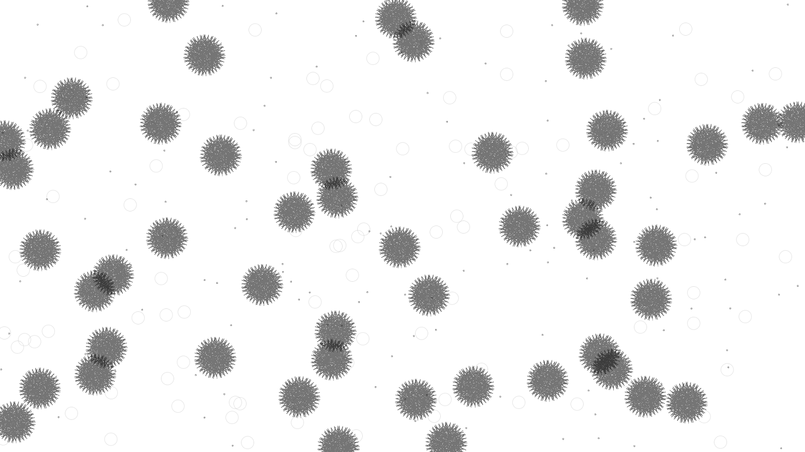
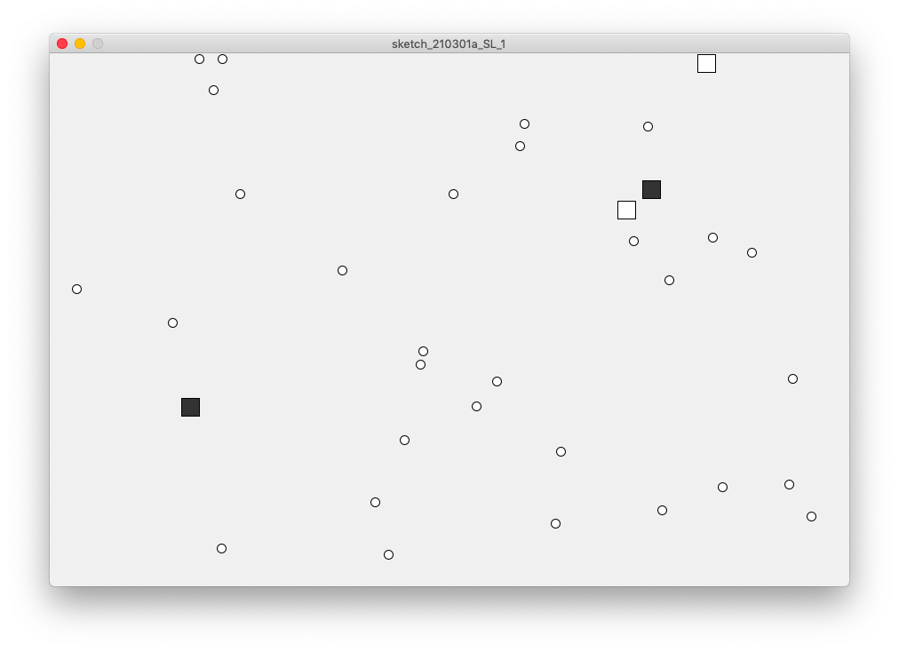
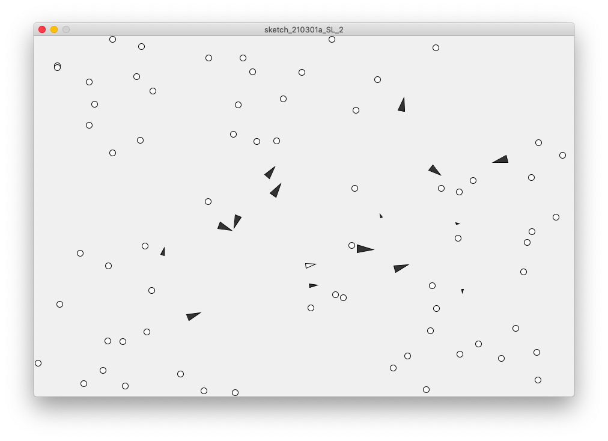
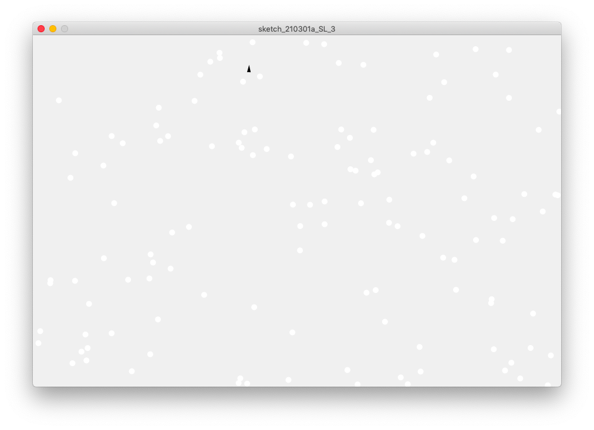
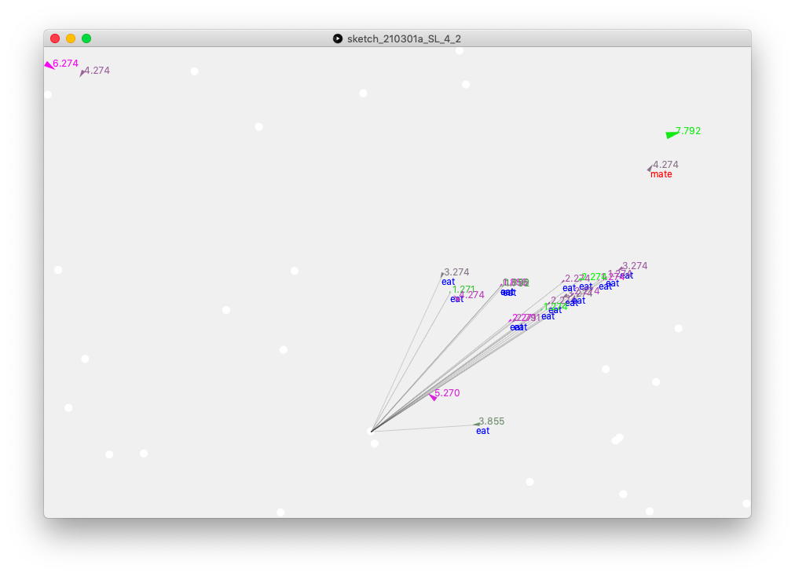
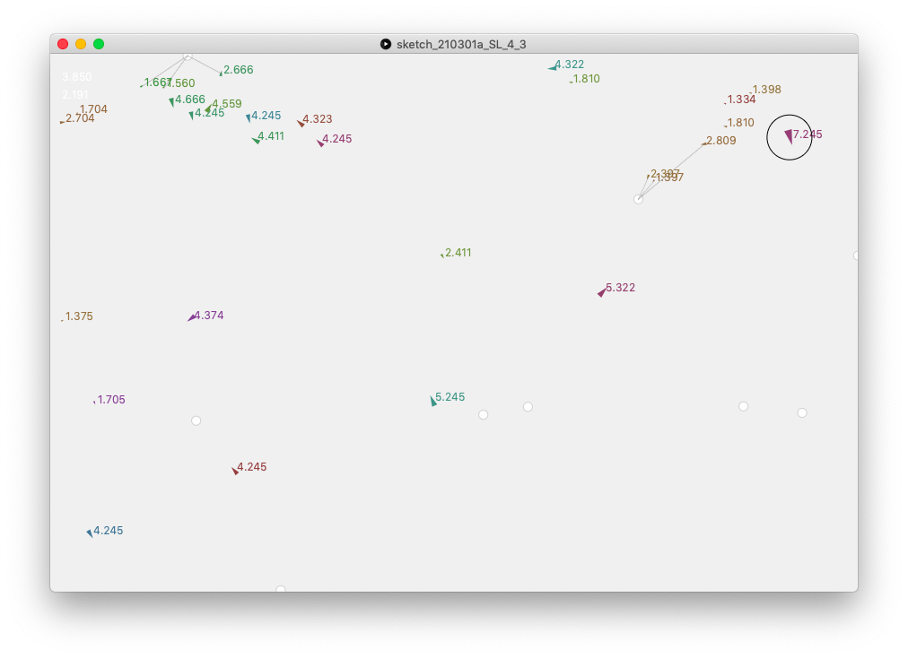
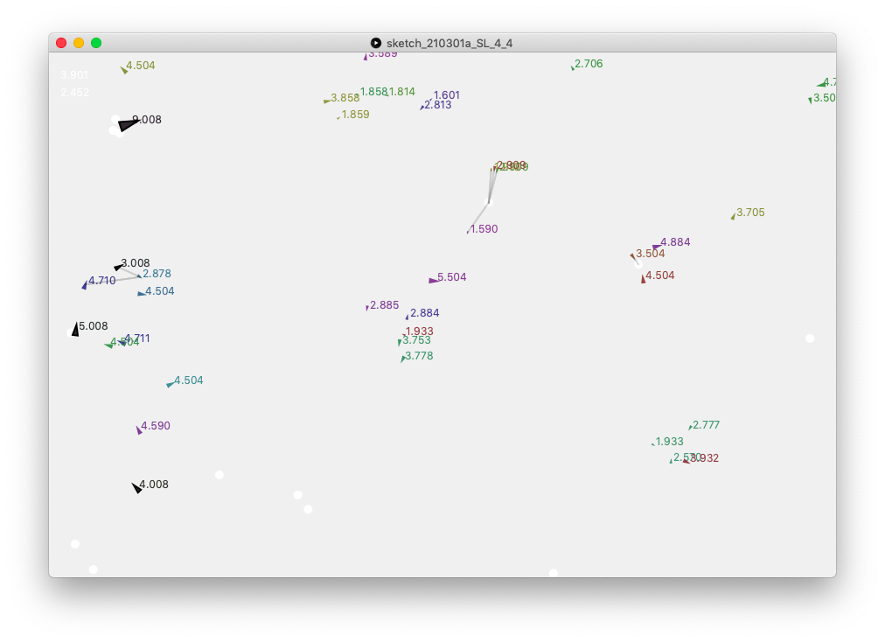
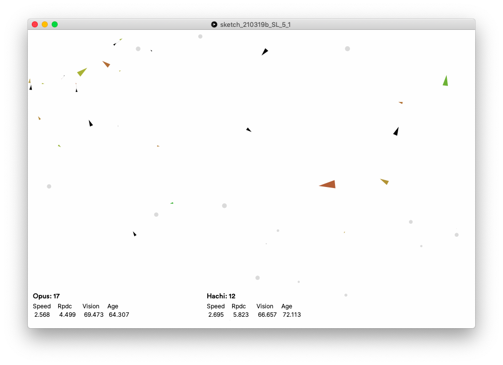

Simulated Life
Overview
Creating an artifical life ecosystem using code to experiment with alternate ecosystem designs
Like many, my journey into creative coding was guided by Daniel Shiffman’s Nature of Code. When it first came out in 2012, it was one of the few resources which explained the core concepts of coding in an easy to understand manner. At the end of a chapter, Daniel urged the reader to implement the concepts by creating a ‘pond’, an ecosystem with intelligent agents which would act of their own accord, and employ a genetic system, much like real life. I never got around to actually creating this ecosystem, partly because it was a difficult undertaking.

My first attempt at creating a 'pond'
I tried to create a few variations, but never managed to figure out how to create intelligent agents capable of interacting with each other. My interest in creating an artificial ecosystem didn’t fade, and I finally decided to create one, but with a unique tweak. Most Artificial Life (AL) systems replicated reality, or at the very least, followed the same rules of predation, and natural selection. I wanted to explore alternative metrics of natural selection. Would being nice to each other help the species as a whole thrive? Or is the idea of the selfish gene far too efficient?
My intent with the AL system was to create an homeostatic system which would then be induced with behaviours such as sharing, community, and respect for the environment, with the hopes of comparing the tweaked systems with the baseline to observe if there were any changes, if at all.

The final version, which includes a control panel to change parameters
A short video of one of the experiments. Note: The colours indicate the maximum speed of one type of agent. With every subsequent generation they get faster on average as only the fastest ones end up surviving. (They change from red -> orange -> yellow -> green)

The primary goal of this project, apart from creating a homeostatic system, is to explore alternate systems of survival as an alternative to the traditional predatory, survival of the fittest paradigm. The first step in doing so was to create a traditional ecosystem which would serve as a benchmark. The alternate systems of survival are phrased as questions, and the plan is continue asking questions of an ecosystem,
I took an iterative approach toward creating the AL ecosystem, adding features and behaviours to the system layer by layer. The first iteration consisted of two types of entities, an agent (square) and a food particle (circle).

Iteration 1 : Agents (squares) looking for food (circles). Hunger denoted by color (black=hungry, white=full).

Iteration 2: Perlin noise added, along with 'directionality'. Agents now look for the closest food particle.

Iteration 3: Plants (static food) now regenerate, as well cleaning up of agent algorithm.

Iteration 4: Agents can reproduce by finding a mate, only once they have enough food. They switch between roaming, eating or mating.

Iteration 5: Each agent has unique characteristics, with parents passing their genes to their offspring via a rudimentary DNA system. First experiments conducted to check which characteristics survived better.

Iteration 6: Predators added to the ecosystem, with major changes being made to the backend to ensure everything runs smoothly.

Iteration 7: Telemetry overlay added to observe experiments conducted with the system. Visual characteristics added to reflect the agent's actual DNA values.
Would a species survive better if it shared resources?
The answer to this might seem obvious, given that humans, as a species worked together as a community to evolve. However in the context of a simple ecosystem, with simple rules, does this still hold true? There’s no straightforward answer to this question, and in the simulations, the answer is both yes and no. When there is a scarcity of food, or when agents in a space where there isn’t enough food, sharing helps keep entities alive till more food is found. In a situation where there is an abundance of food, sharing can be detrimental, as it prevents the entities from having enough food to find a mate, reproduce and transfer their genes to the next generation.
This may sound philosophical, but the ecosystem has multiple answers to a question, one just needs to pay attention. The answers are definitely not binary, and the context for the answers does matter.
Does it help to look after the environment?
A relevant question, given that humans are asking themselves the same question and realising that the answer is indeed yes. This is mirrored in the ecosystem as well. Entities can ‘take care’ of the environment by only eating older, mature plants, and leaving the younger plants to mature and reproduce. When entities do not pick and choose which plants they eat, they decimate entire clusters, leaving that particular section completely bare, and as a result any younger entities may not be able to survive till they find another cluster or wait for the plants to grow again. When entities pay attention to what they eat, enough plants in a cluster survive to continue reproducing and sustaining the cluster. Although the entities may not experience the same population explosion they have when they eat everything, in the longer run, they have a steadier growth rate, as compared to alternating highs and lows in the population count.
This ecosystem, or the pond as it’s affectionately known serves a functional test-bed to research and answer questions one might have. It’s also a fun tool to play around with, as changing the values of the various parameters can lead to interesting outcomes. To make the pond accessible, a control panel with various parameter controls was developed. It contains various controls, as well as a reset button, which makes it easy to set parameters, reset and view the outcome without having to recompile and relaunch the Processing code. The pond is essentially an open-ended research tool.